Move or edit a drawn cutout
You can move a drawn cutout along the face, edit the drawn cutout feature to change such things as the cutout direction and extent, or you can edit the drawn cutout profile to make changes to the sketch element used to create the cutout.
Move a drawn cutout
-
Select the drawn cutout.
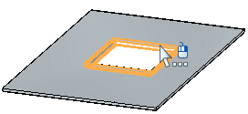
-
Click the steering wheel axis shown.
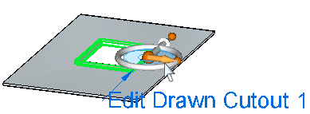
-
Drag the cutout to a new location.
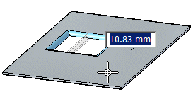
-
Click to save the edit.
Edit a drawn cutout feature
-
Select the drawn cutout.
-
Click the edit handle.
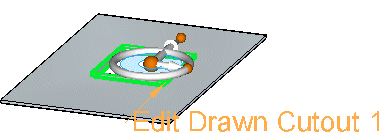
The cutout direction arrow, dynamic edit box, and feature profile edit handle are displayed.
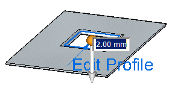
-
Type a value for the cutout extent.
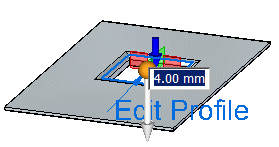
-
Click the handle to change the cutout direction.
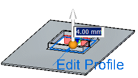
-
Right-click to save the edits.
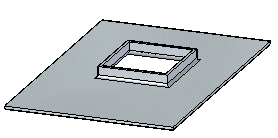
Edit a drawn cutout profile
-
Select the drawn cutout.
-
Click the edit handle.
The cutout direction arrow, dynamic edit box, and feature profile edit handle are displayed.
-
Click the feature profile edit handle.
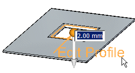
-
Make changes to the existing cutout profile.
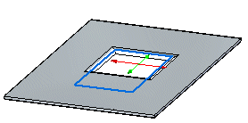
-
Click the green Accept button
 .
.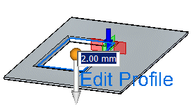
-
Right-click to save the edit.
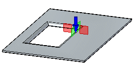
How do I
Construct a drawn cutoutLearn more
Constructing drawn cutoutsLook up more details
Drawn Cutout commandDrawn Cutout command bar
Drawn Cutout command bar
Drawn Cutout Options dialog box